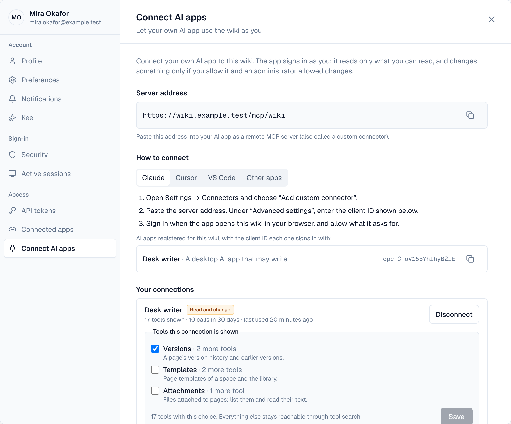
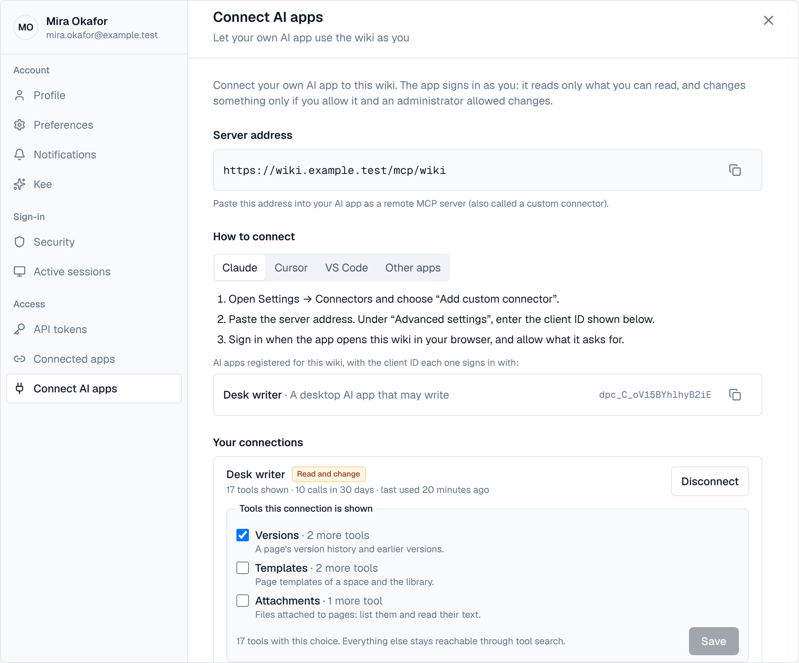
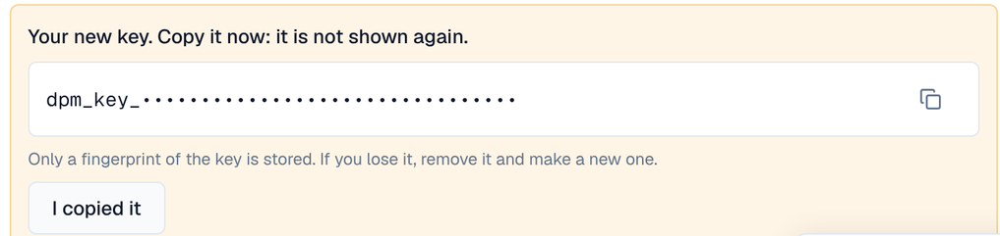

The Wiki has a built-in server that AI apps outside the Wiki can connect to, such as Claude, Cursor or VS Code. Your app signs in as you: it reads only what you can read, and changes something only when you allowed it and an administrator allowed changes. It uses the same tools as Ask Kee.
1. What you need
- An administrator turned on Let outside AI apps connect and registered the AI app you use (see Outside AI apps). This works whether or not Kee itself is on.
- You hold the Connect AI apps permission (organization admins by default).
- An AI app that supports remote MCP servers (Model Context Protocol, over streamable HTTP) with sign-in. Some apps call it a custom connector.
While all of this is true, your profile settings have Connect AI apps under Access.
2. Connect an app
- Open your profile settings and select Connect AI apps under Access.
- Copy the Server address. It is your Wiki's address followed by /mcp/wiki.
- Under How to connect, pick your app (Claude, Cursor, VS Code or Other apps) and follow its steps: add the address as a remote server and, when the app asks, enter the client ID shown for it.
- When the app opens the Wiki in your browser, sign in and read what it asks for. Allow it.
- The app is listed under Your connections, marked Read only or Read and change.

If the page says the public address isn't set, or that no AI app is registered, ask an administrator.
3. What an app can do
- Read: everything Ask Kee can read, with your access: pages, the page tree, spaces, comments, labels, versions, templates, attached files' text, and the Wiki's product docs. Never a page you can't open, a page under a lock you are not on, or anything of a space that turned Kee off.
- Change: create page drafts, change pages (the whole page or one section, a new title, and publish only when asked), comment and reply, add and remove labels. Only when all three allow it: the app was registered for reading and changing, you agreed to that when signing in (it is listed apart, under a warning), and an administrator set that group of tools to Read and change.
- A change is written at once, as you, with your permissions, page locks and limits, like a change you make yourself. It is in the audit log with you, the app and the page, and the next version of a page an app wrote into is marked With an AI app in the page history.
- Administer (Enterprise): change who can do what in a space, labels across the Wiki, page locks and other settings, as you and only where you are an administrator yourself. Only when the app was registered with the Administer scope, you agreed to it when signing in, an administrator set Wiki administration to Administration, and the app signed in through the browser: a key never administers.
- An app never manages people, groups, keys, sign-in, the licence or Kee's own settings.
An app that may change the Wiki acts with your name. Give it only to apps you trust, and only the access it needs.
4. Choose the tools a connection is shown
AI apps choose less well from a long list of tools. Every connection gets the core tools (search, pages and their tree, spaces, comments, labels, plus the change tools when it may change), tool search and the product docs. Under each connection, Tools this connection is shown adds more groups:
| Group | Adds |
|---|---|
| Versions | A page's version history and earlier versions |
| Templates | Page templates of a space and the library |
| Attachments | Files attached to pages: list them and read their text |
| Slides | Slide decks shown on pages: list them and read their slides |
- The line under the list says how many tools the connection will see with your choice. More than 40 shows advice; it is never blocked.
- Tools you leave out stay reachable through tool search, with the same checks.
- A group an administrator switched off can't be chosen.
- Save: the app sees the new list the next time it asks for it.

5. Keys
For an app that can't open a browser to sign in, make a key under Your keys. The app sends the server address and the key as a bearer token. A key acts as you.
- Under Your keys, give the key a Name: where you will use it.
- Choose how long it Works for, up to the longest your administrator allows (90 days by default).
- Choose what it May do: Read only, or Read and change (tick that you understand anything holding the key can change pages, comments and labels as you).
- Select Make key, copy the key and select I copied it. It is never shown again.

- Afterwards only the start of the key is shown, with its end date and when it was last used. Only a fingerprint is stored: if you lose it, remove it and make a new one.
- Remove stops a key at once, everywhere it is used.
- If the section says new keys can't be made, keys are switched off for the installation or you may not make them.
6. End a connection
- Disconnect stops the app using the Wiki as you until you sign in to it again.
- When an administrator ends a connection, it says An administrator ended this connection. Its calls are refused. To use the app again, remove the connection and connect again.
7. Limits
- All your connections together make up to 60 calls a minute by default (an administrator can change it); a change counts as two. Over it, the app is told how long to wait.
- Changes also take from your usual budgets for publishing, comments and labels.
- Calls through an app don't count against your Kee daily limit: your app uses its own model.